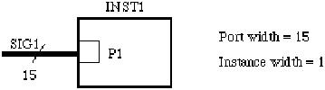
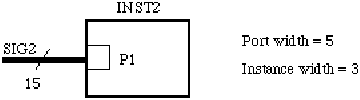

companyNameDrawing ::= '(' 'companyNameDrawing'
{ pcbDrawingTextDisplay }
')'
<pcbDrawingTitleBlockAttributeDisplay
Specifies how to display the companyName text string.
See pcbDrawingTitleBlockAttributeDisplay for an example of display slots.
complementedName ::= '(' 'complementedName'
{ complementedNamePart | nameDimension | namePartSeparator |
simpleName }
')'
*nameDimensionStructure !nameStructure
ComplementedName is used to specify that the name of the object is complemented, i.e. implies the inverse of the same name without a complement indicator. The method for specifying complements varies widely among systems, e.g. "~enable", "Nenable" or "enable" with a bar over it.
(nameInformation
(primaryName "~a"
(nameStructure
(complementedName "a" ))))
In this example the character '~' implies complement in the original system. In EDIF the complement is specified explicitly with complementedName.
complementedNamePart ::= '(' 'complementedNamePart'
{ complementedNamePart | namePartSeparator | simpleName }
')'
*complementedName *complementedNamePart *complexName
ComplementedNamePart is used to specify that an ordered list of substrings, complementedNameParts, namePartSeparators and simpleNames, of the original name is complemented.
(nameInformation
(primaryName "rd/~wr"
(nameStructure
(complexName "rd"
(namePartSeparator "/" )
(complementedNamePart "wr" )))))
Here, the original name "rd/~wr" contains a complemented substring "wr". ComplementedNamePart is used to specify this without the use of the special character '~'.
complexGeometry ::= '(' 'complexGeometry'
geometryMacroRef
transform
')'
*figure *geometryMacro *pcbDrawingFigure *pcbPhysicalFigure
ComplexGeometry is used to place a geometryMacro, which is a set of pre-defined graphical entities. A transform must be provided to indicate how the geometryMacro is to be transformed.
(figure TOP
(path (pointList ...))
(complexGeometry
(geometryMacroRef BULLET)
(transform (origin (pt 200 300)))))
This example shows a pre-defined piece of graphics named BULLET being placed in a figure TOP.
complexName ::= '(' 'complexName'
{ complementedNamePart | nameDimension | namePartSeparator |
simpleName }
')'
*nameDimensionStructure !nameStructure
ComplexName is used to specify in an explicit format the structural components and relationships implied by special characters and substrings in an object's originalName. An ordered list of simpleNames, namePartSeparators, complementedNameParts and nameDimensions is specified by a complexName. More than one nameDimension indicates that the object is multi-dimensional, with the first nameDimension in the list sequencing slowest and the last nameDimension in the list sequencing fastest.
(schematicBus A (signalGroupRef ...)
(schematicInterconnectHeader
(nameInformation
(primaryName "A[0:3]"
(nameStructure
(complexName "A"
(nameDimension
(nameDimensionStructure
(sequence 0 3))))))) ... ) ... )
Here a bus, a one-dimensional object, is specified using the complexName format to capture the name and size of the bus without using the special characters '[', ']', and ':'.
compound ::= '(' 'compound'
{ logicNameRef }
')'
Compound is an attribute of a logic value which is used to specify a logic value that has a well-defined relationship to previously-defined logic values. This allows the derivation of various degrees of unknown values using other logic values that are defined using compound. Compound is intended to assist in the process of relating the logic name to those used in a particular target simulator. This does not imply any relationship for comparison of logic values in subsequent descriptions, such as may be specified in a logicOneOf construct.
(logicDefinitions ... (logicValue WF ...) (logicValue WT ...) (logicValue SF ...) (logicValue ST ...) (logicValue F (compound WF SF)) (logicValue T (compound WT ST)) (logicValue W (compound WF WT)) (logicValue S (compound SF ST)) (logicValue U (compound WF WT SF ST)))
In the above example, the logic value T is a compound of the logic values WT and ST. T is treated as an individual value in later descriptions.
condition ::= '(' 'condition'
booleanExpression
')'
This specifies the condition which determines whether or not an ifFrame is expanded. If the booleanExpression evaluates to true, the ifFrame is expanded.
(ifFrame F1
(condition
(booleanParameterRef doubleBuffer))
...)
This frame may contain optional circuitry to achieve double buffering. The frame is included if the parameter doubleBuffer is true.
conditionDisplay ::= '(' 'conditionDisplay'
( addDisplay | replaceDisplay | removeDisplay )
')'
<schematicIfFrameBorder <schematicIfFrameBorderTemplate
Adds, replaces or removes display positions for the condition attribute of the associated ifFrame.
(conditionDisplay
(addDisplay
(display
(figureGroupOverride Green
(displayAttributes ...))
(transform (origin (pt 25 30))
(rotation 90)))))
conductiveMaterial ::= '(' 'conductiveMaterial'
')'
Specifies that the material is primarily for conducting electricity.
(pcbMaterial Copper (pcbMaterialHeader ...) (conductiveMaterial) (pcbStandardMaterial))
connectedSignalIndexGenerator ::= '(' 'connectedSignalIndexGenerator'
integerExpression
')'
connectedSignalIndexGeneratorDisplay signal
ConnectedSignalIndexGenerator provides an integerExpression which defines how a wide port on an instance is to be connected to a wide signal. The instance may also be wide (iterated).
The integerExpression is evaluated for different values of the port index (portIndexValue) and instance index (instanceIndexValue) and the result of each evaluation is an integer value which indicates how a single bit of the port is to be connected to the wide signal. The integer resulting from the evaluation indicates the index value of the signal to which the port bit is connected.
The integer result of the evaluation must be greater than or equal to zero and less than the width of the signal to which the port is connected.
The integerExpression may refer, for example, to constants and parameters that are available within its scope.
ConnectedSignalIndexGenerator is not available for use in connecting signals to master ports. These are always connected sequentially as if the connectedSignalIndexGenerator was:
(connectedSignalIndexGenerator (portIndexValue))
If no connectedSignalIndexGenerator construct is present for a port instance, then the default value is as follows:
(connectedSignalIndexGenerator
(integerRemainder
(integerSum
(portIndexValue)
(integerProduct
(integerParameterRef portWidthParameter)
(instanceIndexValue)))
(integerParameterRef signalWidthParameter)))
where the width of the port is defined by a parameter named portWidthParameter and the width of the signal is defined by a parameter signalWidthParameter.
The connectivity defined by this expression is illustrated in the examples below and is consistent with the Level 0 definitions of fanned out and commoned connections as defined under instance.
The figure above illustrates an example of an instance of width 3 with a wide port, P1, with width P1portWidth, connected to a wide signal, SIG2 with width defined by a parameter signalWidth. This is illustrated in the EDIF fragment below:
(logicalConnectivity
(instance INST2 (clusterRef ...)
(instanceWidth 3)
(integerParameterAssign
p1PortWidth 5)
(instancePortAttributes P1
(connectedSignalIndexGenerator
(integerRemainder
(integerSum
(portIndexValue)
(integerProduct
5
(instanceIndexValue)))
(integerParameterRef
signalWidth)))))
...
(signal SIG2
(signalJoined
(portInstanceRef P1 (instanceRef INST2)))
(signalWidth (integerParameterRef signalWidth))
...) ...)
The connectivity defined in this example (on expansion) would be as follows for a value of signalWidth = 15:
| Instance number | Port bit of P1 | Connected to signal bit of SIG1 |
| 0 | 0 | 0 |
| 0 | 1 | 1 |
| 0 | 2 | 2 |
| 0 | 3 | 3 |
| 0 | 4 | 4 |
| 1 | 0 | 5 |
| 1 | 1 | 6 |
| 1 | 2 | 7 |
| 1 | 3 | 8 |
| 1 | 4 | 9 |
| 2 | 0 | 10, etc. |
The connectivity defined in this example (on expansion) would be as follows for a value of signalWidth = 5:
| Instance number | Port bit of P1 | Connected to signal bit of SIG1 |
| 0 | 0 | 0 |
| 0 | 1 | 1 |
| 0 | 2 | 2 |
| 0 | 3 | 3 |
| 0 | 4 | 4 |
| 1 | 0 | 0 |
| 1 | 1 | 1 |
| 1 | 2 | 2 |
| 1 | 3 | 3 |
| 1 | 4 | 4 |
| 2 | 0 | 0, etc. |

The figure above illustrates an example of an instance with a wide port, P1, connected to a wide signal, SIG1. This is illustrated in the EDIF fragment below:
(logicalConnectivity
(instance INST1 (clusterRef ...)
(instancePortAttributes P1
(connectedSignalIndexGenerator
(portIndexValue))))
...
(signal SIG1
(signalJoined
(portInstanceRef P1 (instanceRef INST1)))
(signalWidth 15)
...) ...)
The connectivity defined in this example (on expansion) would be as follows:
| Port bit of P1 | Connected to signal bit of SIG1 |
| 0 | 0 |
| 1 | 1 |
| 2 | 2, etc. |

The figure above illustrates an example of an instance of width 3 with a wide port, P1, connected to a wide signal, SIG2. This is illustrated in the EDIF fragment below:
(logicalConnectivity
(instance INST2 (clusterRef ...)
(instanceWidth 3)
(instancePortAttributes P1
(connectedSignalIndexGenerator
(integerSum
(portIndexValue)
(integerProduct
5
(instanceIndexValue))))))
...
(signal SIG2
(signalJoined
(portInstanceRef P1 (instanceRef INST2)))
(signalWidth 15)
...) ...)
The connectivity defined in this example (on expansion) would be as follows:
| Instance number | Port bit of P1 | Connected to signal bit of SIG1 |
| 0 | 0 | 0 |
| 0 | 1 | 1 |
| 0 | 2 | 2 |
| 0 | 3 | 3 |
| 0 | 4 | 4 |
| 1 | 0 | 5 |
| 1 | 1 | 6 |
| 1 | 2 | 7 |
| 1 | 3 | 8 |
| 1 | 4 | 9 |
| 2 | 0 | 10, etc. |
If it were intended that the corresponding bit of each port on each instance be connected together, then this would be achieved with the following connectedSignalIndexGenerator:
(connectedSignalIndexGenerator (portIndexValue))
In this case the signal SIG2 only needs to be 5 bits wide. The connectivity achieved is illustrated in the table below:
| Instance number | Port bit of P1 | Connected to signal bit of SIG1 |
| 0 | 0 | 0 |
| 0 | 1 | 1 |
| 0 | 2 | 2 |
| 0 | 3 | 3 |
| 0 | 4 | 4 |
| 1 | 0 | 0 |
| 1 | 1 | 1 |
| 1 | 2 | 2 |
| 1 | 3 | 3 |
| 1 | 4 | 4 |
| 2 | 0 | 0, etc. |
connectedSignalIndexGeneratorDisplay ::= '(' 'connectedSignalIndexGeneratorDisplay'
( addDisplay | replaceDisplay | removeDisplay )
')'
connectedSignalIndexGenerator display signal
ConnectedSignalIndexGeneratorDisplay provides display positions for a connectedSignalIndexGenerator.
connectivityBus ::= '(' 'connectivityBus'
interconnectNameDef
signalGroupRef
interconnectHeader
connectivityBusJoined
{ comment | connectivityBusSlice | connectivitySubBus | userData }
')'
*connectivityFrameStructure *connectivityStructure
A connectivityBus is a structured representation of connectivity. Structural connectivity allows the ordering of ports to be described and makes an association between signals, ports and rippers.
ConnectivityBus has a name, interconnectNameDef, and a header. Its structure in terms of the signals it contains is defined by a reference to a signalGroup given by signalGroupRef. Its structure in terms of the ports that it connects together is given within connectivityBusJoined.
The subbusses that a connectivityBus contains further describe the structure of the connectivity in a manner analogous to connectivitySubNet for connectivityNet. The structure may also be further elaborated by using connectivityBusSlice, which consists of a subset of the signals of a connectivityBus.
A connectivityBus provides further information about the connectivity described in the signals that are contained in the signalGroup referenced by signalGroupRef.
(signal A0
(signalJoined
(portInstanceRef P3_0
(instanceRef I1))
...))
(signal A1
(signalJoined
(portInstanceRef P3_1
(instanceRef I1))
...))
(signal A2
(signalJoined
(portInstanceRef P3_2
(instanceRef I1))
...))
(signal A3
(signalJoined
(portInstanceRef P3_3
(instanceRef I1))
...))
(signalGroup A
(signalList (signalRef A0) (signalRef A1)
(signalRef A2) (signalRef A3)))
...
(connectivityBus busA
(signalGroupRef A)
(interconnectHeader ...)
(connectivityBusJoined
(portJoined (portInstanceRef P3 (instanceRef I1))) ...)
...)
In this example, there is an instance I1 with a portBundle P3, which is 4 bits wide. This instance port P3 is joined to connectivityBus busA, which is a bus 4 bits wide. The signals contain the connectivity of the individual bits of the portBundle P3.
connectivityBusJoined ::= '(' 'connectivityBusJoined'
portJoined
{ connectivityRipperRef }
')'
!connectivityBus !connectivityBusSlice !connectivitySubBus
ConnectivityBusJoined lists all the ports and rippers that are connected to the bus, bus slice or subbus. It is analogous to connectivityNetJoined in net.
(connectivityBusJoined (portJoined (portRef MP1) ...) (connectivityRipperRef R1))
In this example, the master port MP1 and a connectivityRipper R1 are joined to the bus.
connectivityBusSlice ::= '(' 'connectivityBusSlice'
interconnectNameDef
signalGroupRef
interconnectHeader
connectivityBusJoined
{ comment | connectivityBusSlice | connectivitySubBus | userData }
')'
*connectivityBus *connectivityBusSlice *connectivitySubBus
A connectivityBusSlice is used to define part of a connectivityBus that has a width less than the width of the immediately-enclosing connectivityBus, connectivityBusSlice or connectivitySubBus. A connectivityBusSlice may be further subdivided into connectivityBusSlices and connectivitySubBusses.
(signalGroup A0_1
(signalList (signalRef A0) (signalRef A1)))
(signalGroup A2_3
(signalList (signalRef A2) (signalRef A3)))
(signalGroup A
(signalList (signalRef A0_1) (signalRef A2_3)))
...
(connectivityBus A
(signalGroupRef A)
(interconnectHeader ...)
(connectivityBusJoined ...)
(connectivityBusSlice S0_1
(signalGroupRef A0_1)
(interconnectHeader ...)
(connectivityBusJoined ...) ...)
(connectivityBusSlice S2_3
(signalGroupRef A2_3)
(interconnectHeader ...)
(connectivityBusJoined ...) ...)
...)
In this example, the connectivityBus A is subdivided into two connectivityBusSlices S0_1 and S2_3 . Each of these has two signals from the four-bit-wide connectivityBus. In this case, there is no overlap between these signals, but there could be one or more signals common to the bus slices.
connectivityFrameStructure ::= '(' 'connectivityFrameStructure'
connectivityFrameStructureNameDef
frameRef
{ comment | connectivityBus | connectivityFrameStructure | connectivityNet
| connectivityRipper | timing | userData }
')'
*connectivityFrameStructure *connectivityStructure
ConnectivityFrameStructure describes the structure of a frame, referenced by frameRef, within the connectivity view. It describes the nets, busses, rippers and frames that make up the frame. The frame referenced by frameRef may be any type of frame.
(connectivityFrameStructure FRAME1 (frameRef FRAME1_LOGICAL) (connectivityNet NET1 ...) (connectivityBus BUS1 ...) ...)
connectivityFrameStructureNameDef ::= nameDef
connectivityStructure frameNameDef nameStructure
ConnectivityFrameStructureNameDef is a name definition for a connectivityFrameStructure.
connectivityNet ::= '(' 'connectivityNet'
interconnectNameDef
signalRef
interconnectHeader
connectivityNetJoined
{ comment | connectivitySubNet | userData }
')'
*connectivityFrameStructure *connectivityStructure
A connectivityNet is a structured representation of connectivity. Structural connectivity allows the ordering of ports to be described and makes an association between signals, ports and rippers. Each connectivityNet is associated with a single signal and with single bit ports.
The connectivitySubNets within a connectivityNet provide further information on the structure of the connectivity.
(connectivityNet NET1 (signalRef SIG1)
(interconnectHeader ...)
(connectivityNetJoined
(portJoined
(portRef MP1)
(portInstanceRef P1 (instanceRef I1)))
(connectivityRipperRef ...)
...)
...)
This example defines a connectivityNet called NET1, which gives the structural connectivity for all or part of the signal SIG1.
connectivityNetJoined ::= '(' 'connectivityNetJoined'
( portJoined | joinedAsSignal )
{ connectivityRipperRef }
')'
!connectivityNet !connectivitySubNet
ConnectivityNetJoined lists all the ports and rippers that are connected to the net or subnet. It is analogous to connectivityBusJoined in bus.
(connectivityNetJoined
(portJoined
(portRef MP1)
(portInstanceRef P1 (instanceRef I1)))
(connectivityRipperRef J1)
...)
This connectivityNetJoined indicates that the master port MP1, the ripper J1 and the instance port P1 are connected into this net.
connectivityRipper ::= '(' 'connectivityRipper'
connectivityRipperNameDef
')'
*connectivityFrameStructure *connectivityStructure
connectivityRipperNameRef connectivityRipperRef
A connectivityRipper is an object used in a connectivity view to associate a connectivity bus, bus slice or subbus with other connectivity busses, subbusses, bus slices, nets or subnets.
The connectivityRipper construct gives a name for the ripper. Association between the connectivityRipper and its nets or busses is defined in the connectivityBusJoined and connectivityNetJoined constructs, which may reference a particular connectivityRipper.
(connectivityRipper I1) (connectivityRipper I2)
This example shows two different rippers, with names I1 and I2.
connectivityRipperNameDef ::= nameDef
ConnectivityRipperNameDef is the name of a connectivity ripper.
connectivityRipperNameRef ::= nameRef
connectivityRipper connectivityRipperNameDef
ConnectivityRipperNameRef is a reference to a connectivityRipperNameDef.
connectivityRipperRef ::= '(' 'connectivityRipperRef'
connectivityRipperNameRef
')'
*connectivityBusJoined *connectivityNetJoined
ConnectivityRipperRef is used to reference a connectivityRipper.
(connectivityRipperRef I1)
This example shows a reference to a connectivityRipper whose name is I1.
connectivityStructure ::= '(' 'connectivityStructure'
{ comment | connectivityBus | connectivityFrameStructure | connectivityNet
| connectivityRipper | localPortGroup | timing | userData }
')'
connectivityFrameStructureNameDef
ConnectivityStructure is used to describe the structural connectivity for a connectivityView.
Logical connectivity describes which ports are connected together, in terms of signals, and structural connectivity describes the structure of that connectivity.
ConnectivityView has no implementation section because there is no graphical implementation of a connectivity view.
(connectivityStructure (connectivityRipper I1) (connectivityNet NET1 ...) (connectivityNet NET2 ...) (connectivityNet NET3 ...) (connectivityBus BUS1 ...) ...)
connectivitySubBus ::= '(' 'connectivitySubBus'
interconnectNameDef
interconnectHeader
connectivityBusJoined
{ comment | connectivityBusSlice | connectivitySubBus | userData }
')'
*connectivityBus *connectivityBusSlice *connectivitySubBus
A connectivitySubBus provides further structural information about the connectivity of the connectivityBus, connectivityBusSlice or connectivitySubBus that contains it. It is analogous to connectivitySubNet in connectivityNet.
The width of a subbus is the same as the enclosing bus slice or bus.
(connectivityBus A (signalGroupRef A)
(interconnectHeader ...)
(connectivityBusJoined
(portJoined (portRef MP1) (portRef MP2)) ...)
...
(connectivitySubBus S1
(interconnectHeader ...)
(connectivityBusJoined
(portJoined (portRef MP1)) ...) ...)
(connectivitySubBus S2
(interconnectHeader ...)
(connectivityBusJoined
(portJoined (portRef MP2)) ...) ...))
In this example, the bus A has two subbusses. The first, S1, joins the master port MP1 and the second, S2, joins the master port MP2.
connectivitySubNet ::= '(' 'connectivitySubNet'
interconnectNameDef
interconnectHeader
connectivityNetJoined
{ comment | connectivitySubNet | userData }
')'
*connectivityNet *connectivitySubNet
A connectivitySubNet provides further structural information about the connectivity of the connectivityNet or connectivitySubNet that contains it.
(connectivityNet NET1 (signalRef SIG1)
(interconnectHeader ...)
(connectivityNetJoined
(portJoined (portRef MP1)
(portInstanceRef P1 (instanceRef I1)))
...)
(connectivitySubNet SUBNET1
(interconnectHeader ...)
(connectivityNetJoined
(portJoined (portRef MP1))) ...)
(connectivitySubNet SUBNET2
(interconnectHeader ...)
(connectivityNetJoined
(portJoined
(portInstanceRef P1
(instanceRef I1))) ...)
...)
...)
In this example, the connectivity of the connectivityNet is described by two subnets, SUBNET1 and SUBNET2
connectivityTagGenerator ::= '(' 'connectivityTagGenerator'
stringExpression
')'
connectivityTagGeneratorDisplay
ConnectivityTagGenerator defines how a connectivity tag is to be generated. During hierarchy expansion, stringExpression is evaluated to create the name of a connectivity tag to be associated with the enclosing signal. All signals in a view which have the same connectivity tag are implicitly connected, after design expansion.
The connectivityTagGenerator construct allows you to express parametric connectivity.
(signal abc ...
(connectivityTagGenerator
(stringConcatenate "node"
(stringParameterRef nodeName))) ...)
Here, the connectivity tag name has been constructed by concatenating "node" with the value of nodeName, which is a stringParameter.
(signal SIG1 ...
(signalWidth (integerParameterRef N))
(connectivityTagGenerator
(stringConcatenate "DATA_"
(decimalToString (signalIndexValue)))) ...)
Here, the connectivity tag name has been constructed by concatenating "DATA" with the value of the signal index, which will vary for each signal during expansion. The following connectivity tags would be generated if parameter N has the value 4: "DATA_0", "DATA_1", "DATA_2", and "DATA_3".
connectivityTagGeneratorDisplay ::= '(' 'connectivityTagGeneratorDisplay'
{ display }
')'
<interconnectAttachedText <schematicInterconnectAttributeDisplay
ConnectivityTagGeneratorDisplay provides display information to display the connectivityTagGenerator. The manner in which a string expression is displayed is system dependent. The connectivityTagGenerator that is displayed is the one on the signal associated with the interconnect.
(signal SIG1 (signalJoined ...)
(signalWidth (integerParameterRef WIDTH))
(connectivityTagGenerator
(stringConcatenate "SIG1_"
(decimalToString (signalIndexValue)))))
...
(schematicNet SIG1_NET (signalRef SIG1) ...
(schematicInterconnectAttributeDisplay
(connectivityTagGeneratorDisplay
(display FIG1 (transform ...)))))
In this example the connectivityTagGenerator for signal SIG1 is displayed.
connectivityUnits ::= '(' 'connectivityUnits'
{ <setCapacitance> | <setTime> }
')'
!connectivityViewHeader <physicalScaling
ConnectivityUnits defines the units for connectivityView. It may be specified as a default for the entire data in edifHeader, for a library in libraryHeader, or for a particular view in connectivityViewHeader.
(edif edif_file
(edifVersion 4 0 0)
(edifHeader (edifLevel 0)
(keywordMap (k0KeywordLevel))
(unitDefinitions
(unit mm 1 (e 1 -3) (meter 1))
(unit pF 1 (e 1 -12) (farad 1))
(unit nF 1 (e 1 -9) (farad 1))
(unit nanoSec 1 (e 1 -9) (second 1)))
(fontDefinitions ...)
(physicalDefaults ...)
(physicalScaling
(connectivityUnits
(setCapacitance (unitRef pF))
(setTime (unitRef nanoSec)))
...))
(library LIB1
(libraryHeader (edifLevel 0)
(nameCaseSensitivity)
(technology
(physicalScaling
(connectivityUnits
(setCapacitance (unitRef nF))))
...) ...)
(cell CELL1 (cellHeader ...)
(cluster CL1 (interface ...) ...
(connectivityView VIEW1
(connectivityViewHeader
(connectivityUnits
(setCapacitance (unitRef pF))))
...)))))
In this example, unit definitions for mm, pF, nF and nanoSec are defined in the edifHeader. ConnectivityUnits are defined as pF for capacitance and nanoSec for time, and this will apply, unless overridden, to all connectivity views within this edif file.
Within LIB1, connectivityUnits are defined as nF for capacitance, and this will override the definition of setCapacitance in the edifHeader, so within LIB1 all capacitance values within connectivity views will be in nF. This may be overridden at the view level, as in view VIEW1, which resets capacitance values to be in pF.
connectivityView ::= '(' 'connectivityView'
viewNameDef
connectivityViewHeader
logicalConnectivity
connectivityStructure
{ comment | userData }
')'
ConnectivityView describes the electrical connectivity of a cell. In addition, structure may be defined in order to allow attributes, such as interconnect criticality, to be represented.
(connectivityView VIEW_1
(connectivityViewHeader ...)
(logicalConnectivity
(instance ...)
(signal ...) ...)
(connectivityStructure ...))
connectivityViewHeader ::= '(' 'connectivityViewHeader'
connectivityUnits
{ <derivedFrom> | documentation | <nameInformation> |
<previousVersion> | property | <status> }
')'
ConnectivityViewHeader contains data that relates to the connectivity view as a whole.
(connectivityViewHeader (connectivityUnits (setTime (unitRef ms))) (status ...) (documentation ...) ...)
constantNameDef ::= nameDef
!booleanConstant !integerConstant !stringConstant
The constantNameDef is the name of a booleanConstant, integerConstant or stringConstant.
(booleanConstant fastCircuit (true))
Here, the booleanConstant named fastCircuit is being defined.